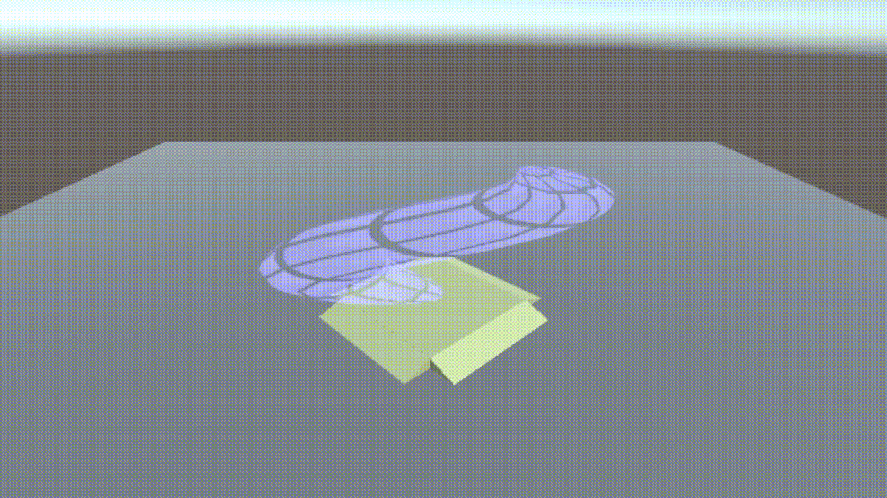

Mediologist
software/programming | film production | graphic design
I am deeply passionate about technical projects encompassing every aspect from idea generation, product design, and project management to development and product assembly. As a Mediaologist, I possess a strong understanding of contemporary technologies and possess the capability to resolve challenges through a focused approach on interaction and IT as central elements of the solution.


 Being a Mediologist comes with its price of always being asked what it is we do.
Mediaology is a multidisciplinary field that encompasses programming, both for
software and hardware, and a profound understanding of how users interact with
the technology we build. In essence, a Mediaologist serves as the vital bridge
between developers and managers, enabling effective communication in a professional manner.
This role supports the creation of products that are both essential and user-friendly.
Being a Mediologist comes with its price of always being asked what it is we do.
Mediaology is a multidisciplinary field that encompasses programming, both for
software and hardware, and a profound understanding of how users interact with
the technology we build. In essence, a Mediaologist serves as the vital bridge
between developers and managers, enabling effective communication in a professional manner.
This role supports the creation of products that are both essential and user-friendly.
 Throughout my educational journey, I have engaged in diverse projects, including film production, video game coding, application development, and hardcore programming. One notable project involved crafting a shader of our choice using the Unity engine, as demonstrated in the accompanying gifs.
Pain Distraction
For children undergoing venipuncture procedures
A farmer asks for help in finding his missing animals by listening. By interacting with a Wii remote, the practitioner must use their spatial awareness to find these animals.
Audio Playground
Facilitating escapism through Virtual Reality
A short relaxing auditory experience that lets the player walk around a playground with instruments that can be played with tools laying around.
Lindisfarne Raid
Using leap motion to choose your path.
An interactive narrative driven story taking place in the year 793 follows the perspective of a child living near a monastery being attacked by vikings.
Project Athena
M-learning for children to enjoy learning during COVID-19
An educational gamified application for android smartphones to help students learn in a more fun way while tracking their progress.
- Design by: HTML5 UP